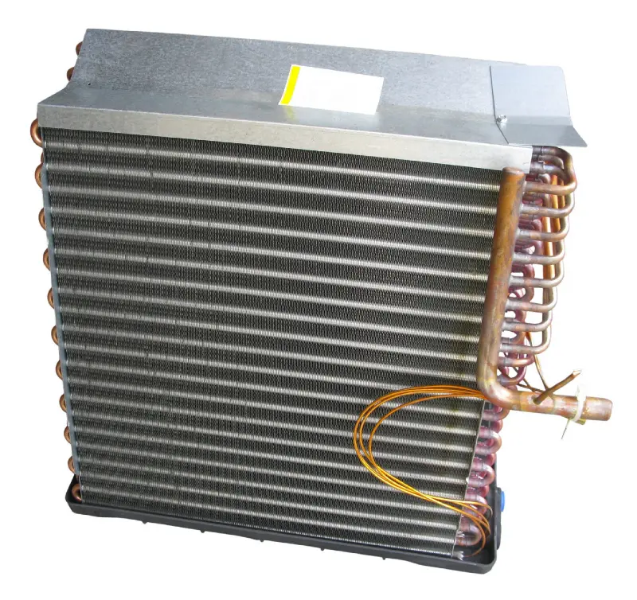

Evaporator coil frozen in Spring Hill or nearby Hernando, Pasco, or Citrus County? Steps to take, why it happens in Florida, prevention tips, and when to call us.
When the Florida heat hits hard and your air conditioner suddenly stops cooling properly, a frozen evaporator coil is often the culprit. This frustrating issue can leave your home uncomfortably warm and, if ignored, may lead to bigger problems with your system. Homeowners across Spring Hill and the surrounding communities in Hernando, Pasco, and Citrus Counties see this more often than you might think, especially during the height of summer when humidity and airborne particles put extra stress on HVAC equipment.
In the sections below, we walk you through exactly what is happening, the safe first steps you can take, the most common reasons it occurs in our local climate, and how professional help can get your comfort back on track quickly. If your system is not cooling right now or you notice ice buildup, reach out to our team at Radco Air Conditioning & Appliance for same-day assistance. We proudly serve all of Hernando, Pasco, and Citrus Counties from our Spring Hill location. Call (352) 684-7821 now or schedule service online.

The evaporator coil sits inside your air handler or furnace and plays a central role in cooling your home. It absorbs heat from the indoor air while the refrigerant inside changes from liquid to gas. As this happens, moisture in the air condenses on the coil — which is normal. However, when airflow is restricted, refrigerant levels drop too low, or the coil becomes excessively dirty, the coil temperature can drop below freezing. The moisture then turns to ice, blocking airflow even further and reducing or stopping your system’s ability to cool.
Florida’s high humidity and pollen levels make this more likely. Dust, pollen, and other particles accumulate faster here than in drier climates, and when combined with everyday wear on filters or minor refrigerant leaks, the conditions for a frozen evaporator coil AC problem develop quickly. Dirty filters and coils are a leading cause of air conditioner malfunctions and can contribute to premature compressor or fan failure.
Catching the problem early helps protect your equipment. Watch for these common indicators:
If you notice any of these, it is time to act. Continuing to run the system with a frozen evaporator coil can strain the compressor and lead to more expensive repairs later.
Your first priority is protecting the equipment while the coil thaws. Follow these steps in order:
These steps often provide temporary relief, but they do not fix the root cause. If your home is still uncomfortable or the problem returns quickly, contact our team by calling (352) 684-7821 or reaching out online now for expert evaporator coil repair in Spring Hill and the tri-county area.
Several factors commonly contribute to this issue for homeowners in Hernando, Pasco, and Citrus Counties, including:
Many of these causes overlap with regular maintenance needs. For a deeper look at professional coil cleaning that helps prevent many of these problems, see our overview on evaporator and condenser coil cleaning.
While the safe steps above can help in the moment, repeated freezing almost always signals a need for trained diagnostics. Running a system with ice on the evaporator coil risks damaging the compressor — one of the most expensive components to replace. Our technicians arrive with the tools to identify whether the issue is low refrigerant, a failing component, severely restricted airflow, or a combination of factors.
We handle evaporator coil repair and restoration for all major brands and system types, including central air and ductless mini-splits. Because we stock many common parts locally, most repairs can be completed the same day. If your coil has been freezing repeatedly, do not keep restarting the system — give us a call at (352) 684-7821 so we can restore reliable cooling before the problem escalates.
When you schedule service with us, we begin with a thorough inspection of the entire cooling system. We check refrigerant levels and pressures, examine the coil for dirt or damage, test airflow and blower performance, and look for any leaks or electrical issues. Once we identify the root cause, we perform the necessary repairs — which may include cleaning the coil thoroughly, repairing a refrigerant leak, clearing a drain line, or replacing a faulty component.
After the repair, we verify that the system is operating at peak performance and provide clear recommendations to help prevent the issue from returning. Many homeowners find that addressing a frozen evaporator coil also improves overall efficiency and indoor comfort.
The best defense is consistent maintenance tailored to our local conditions. Here are practical steps that make a real difference:
Regular professional coil cleaning is especially valuable in our humid climate because it removes the buildup that restricts airflow and contributes to freezing. Pairing that with one of our preventative maintenance programs gives you the strongest protection against repeat issues.
High humidity, pollen, and dust accelerate coil fouling. When combined with restricted airflow from a dirty filter or low refrigerant from a small leak, the coil temperature drops below freezing and ice forms. “Dirty coils and filters are among the most common reasons air conditioners malfunction,” according to the U.S. Department of Energy.
Turn the thermostat to “Off,” switch the fan to “On” to help thaw the coil safely, replace a dirty filter, and allow several hours for complete thawing. Never chip ice or use direct high heat. If the problem returns, contact a professional for evaporator coil repair.
With the fan running on “On,” most coils thaw within a few hours. Larger ice buildup or very cold indoor temperatures can take longer. Always confirm the coil is completely dry before restarting cooling mode.
Yes. Continuing to run the system forces the compressor to work harder against the ice blockage and can lead to overheating or failure. It is best to shut the system down and call (352) 684-7821 for professional help.
It depends on the situation. If your home is becoming uncomfortably warm and the ice is significant, treat it as urgent to avoid compressor damage. Our team offers same-day service across Spring Hill and the tri-county area for situations like this.
Cost varies based on the root cause — whether it is a simple cleaning, refrigerant leak repair, or component replacement. We always provide clear, upfront pricing after diagnostics and never perform work without your approval.
Absolutely. While we are based in Spring Hill, we regularly provide evaporator coil repair and full AC service throughout Hernando, Pasco, and Citrus Counties. Local phone numbers are available for each area.
In most cases, yes. Professional maintenance that includes coil cleaning, filter checks, and system diagnostics catches small issues before they cause freezing. Many homeowners in our service area schedule these visits annually or biannually for reliable summer comfort.
Light surface cleaning is sometimes possible for accessible coils, but deep cleaning, refrigerant work, and electrical diagnostics require specialized tools and EPA Section 608 certification. Improper cleaning can damage fins or spread contaminants. Professional service is the safest and most effective option for lasting results.
Our technician inspects the full system, identifies the cause (airflow, refrigerant, or mechanical), performs the necessary repairs or cleaning, verifies proper operation, and explains any ongoing maintenance recommendations. Most repairs are completed the same day.
If your evaporator coil has frozen or your air conditioner is struggling to keep up this summer, you do not have to wait it out or risk further damage. Our experienced team at Radco Air Conditioning & Appliance is ready to diagnose the issue quickly, perform the right repairs, and help you get comfortable again. We serve homeowners throughout Hernando, Pasco, and Citrus Counties with honest pricing, quality parts, and same-day service whenever possible.